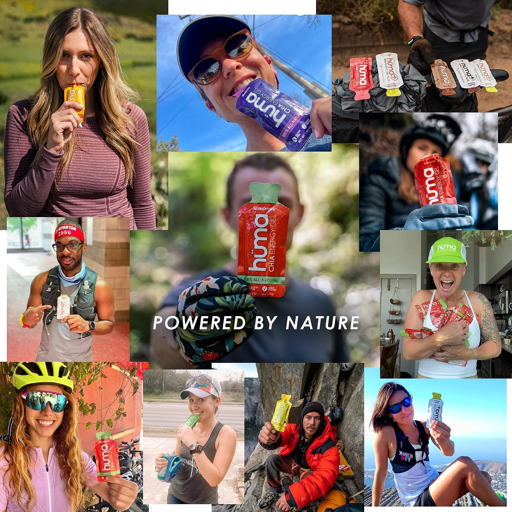
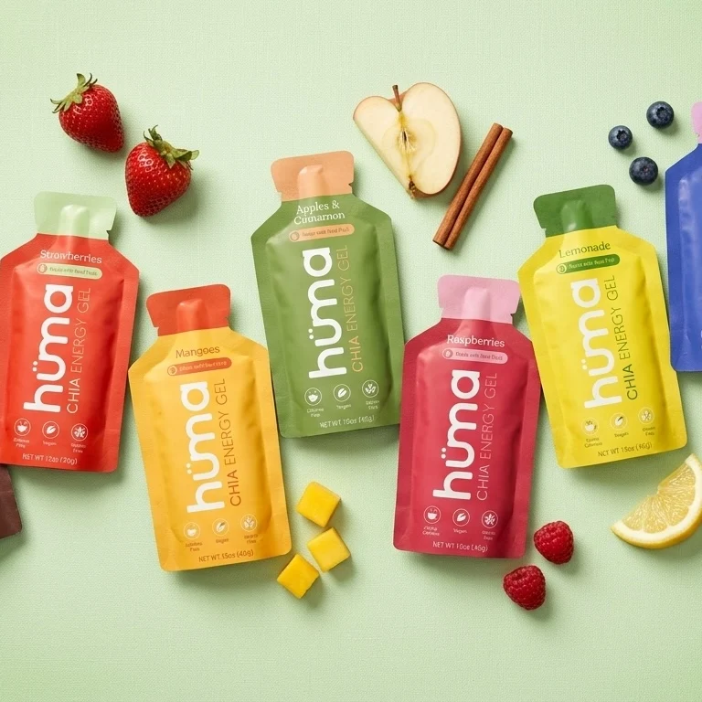
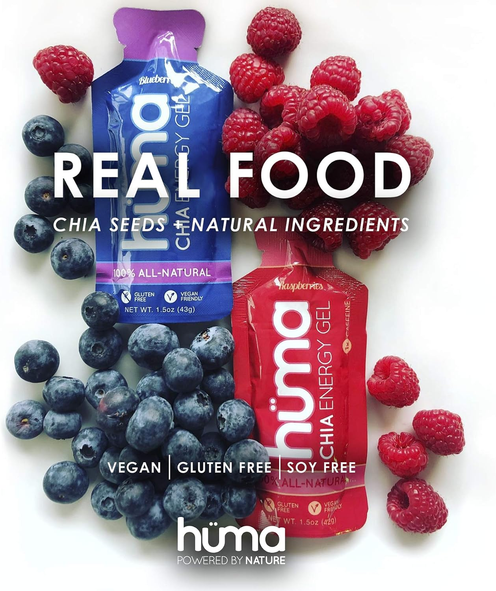
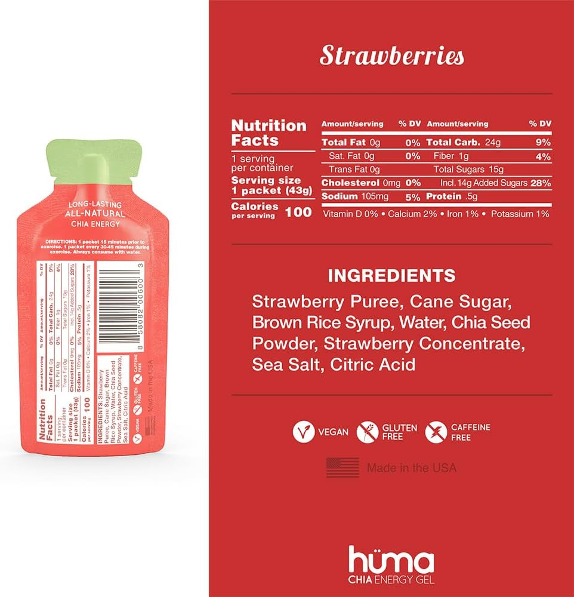

Vizit scores every image, orders the carousel by what converts, and rebuilds what doesn't.
Shoppers swipe looking for answers: what's in it, how big, how it works. The carousel that answers in order converts.
Every image is scored against your category's top performers, and the carousel re-orders so the strongest come first, re-merchandising as performance shifts.




Vizit analyzes your entire category and tells you the content mix your PDP needs to win. If an image is missing, Spark AI generates a version you can use as a placeholder or publish as is.
Spark maps what top-performing PDPs in your category show, and in what order.
Any image your carousel is missing or scoring below standard is called out.
Spark produces the missing asset, ready to use as a placeholder or publish.
Scored at item setup through the API, so no carousel syndicates below standard.
Spark AI takes your underperforming images and generates the carousel assets your category rewards: in use, scale, claims, lifestyle. Ready to review, approve, and publish.